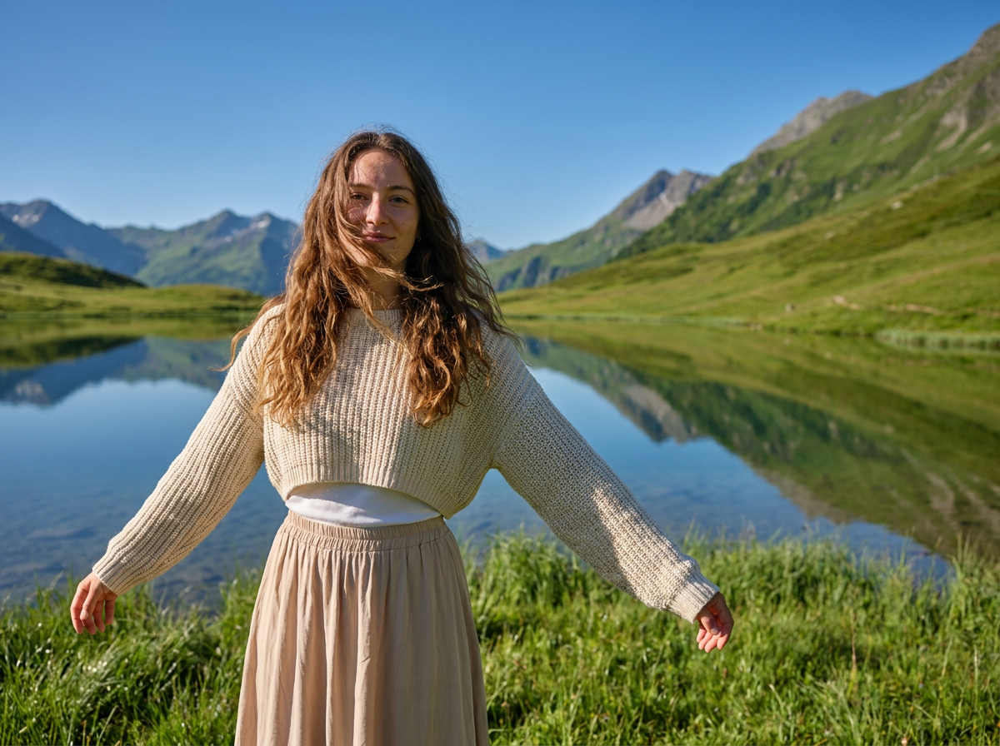
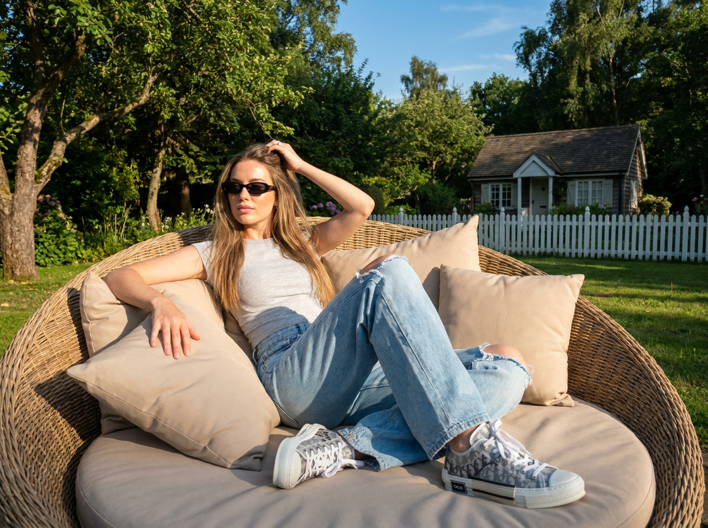
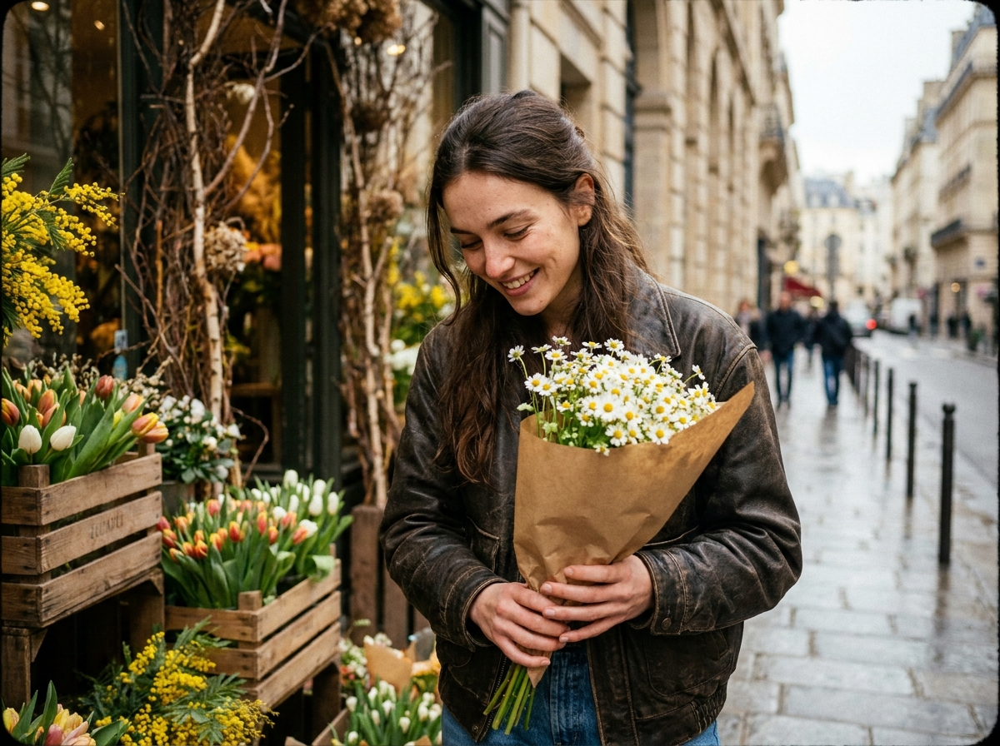
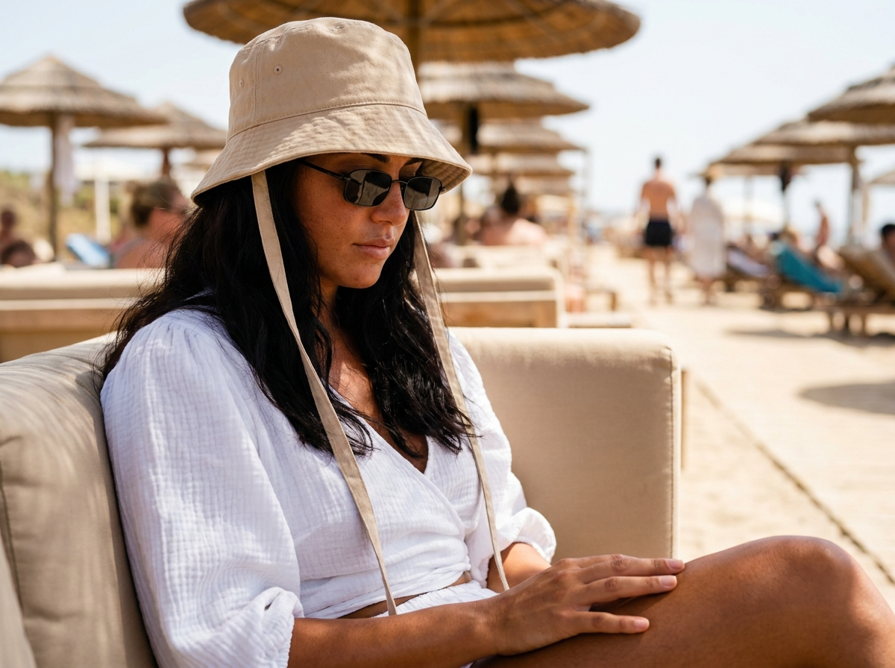
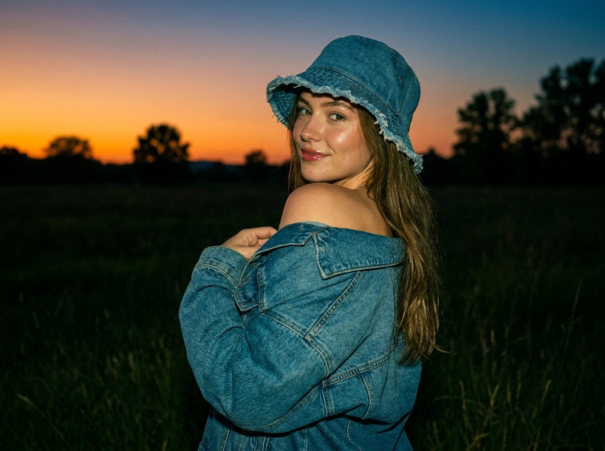
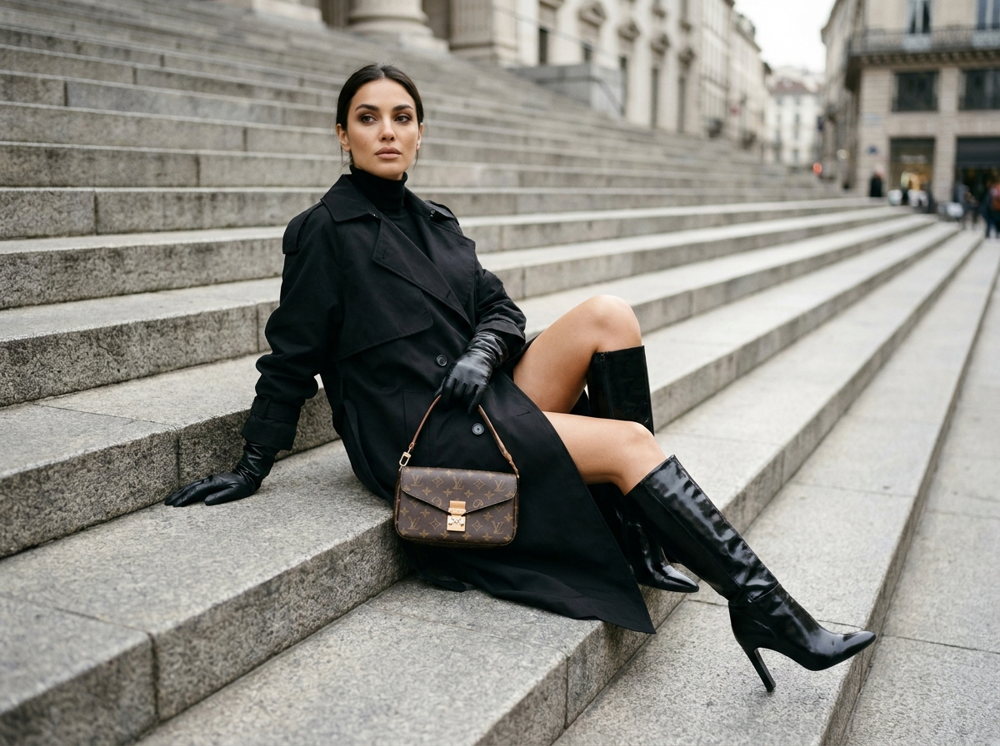
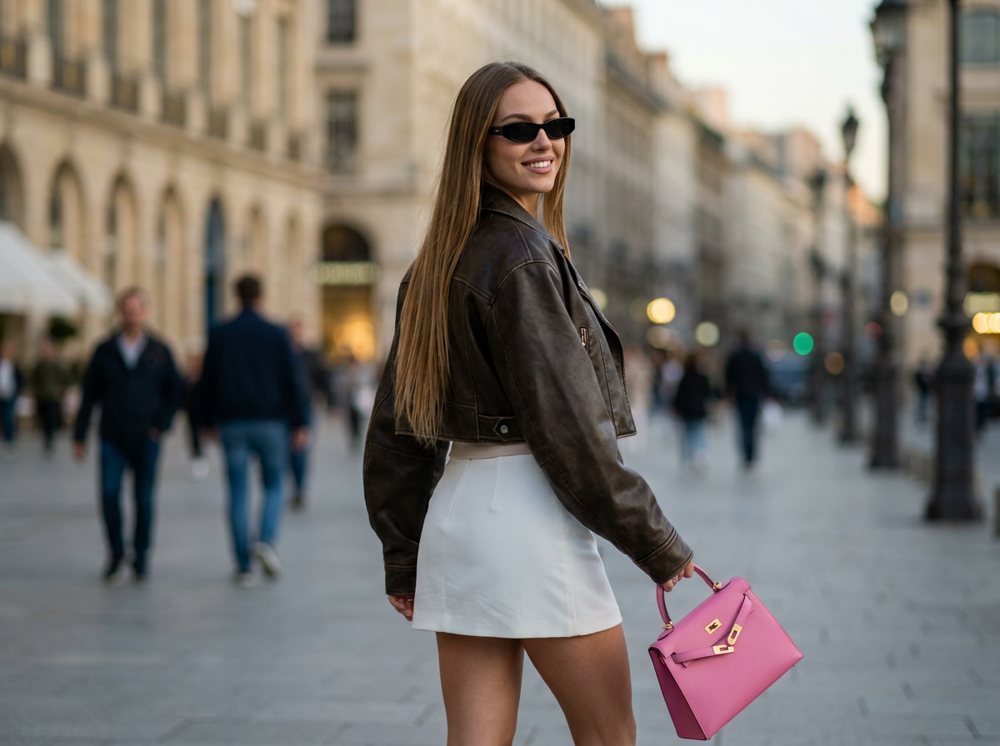
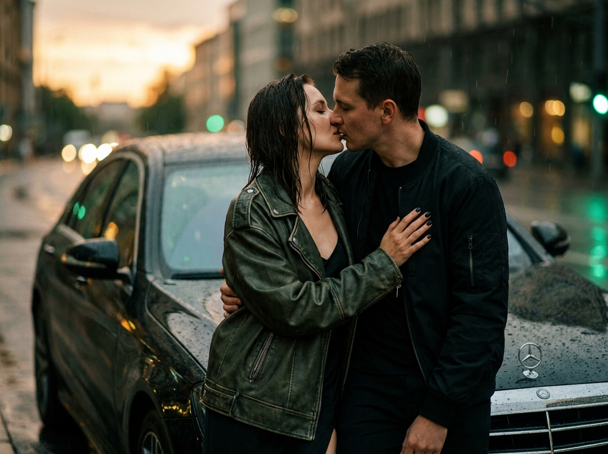
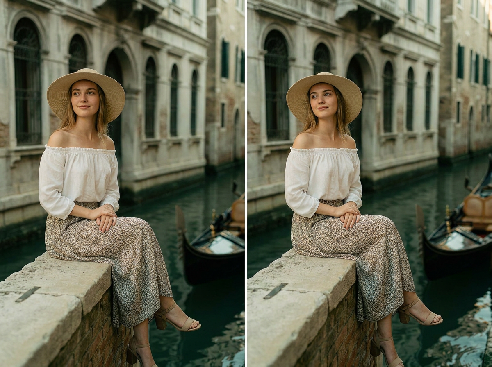
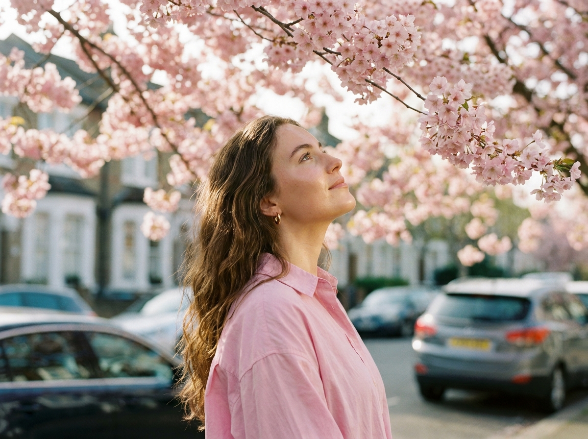

ИИ-фото на улице: 10 промптов для нейросети

Обычный снимок на улице часто проигрывает по свету, позе и фону: прохожие попадают в кадр, одежда выглядит случайной, а лицо теряет сходство. Генерация помогает собрать нужную сцену заранее — от закатного поля до дождливой съёмки у автомобиля.
В подборке — 10 промптов для разных сюжетов: природный лайфстайл, городская мода, пляжный клуб, романтическая сцена, Венеция и цветущая сакура. Каждый текст можно использовать как основу и адаптировать под свой референс.
Как сгенерировать такое фото: пошагово
Нужен снимок анфас при ровном свете, лицо в кадре целиком, без тёмных очков и головных уборов. Разрешение от 1000 пикселей по короткой стороне. Чем чётче исходник, тем точнее модель повторит черты.
Выберите сценарий ниже и нажмите «Копировать» — текст уйдёт в буфер целиком, вместе с командой сохранения внешности. Эта команда стоит первой строкой и отвечает за то, чтобы на выходе было ваше лицо, а не случайное.
Кнопка «Сгенерировать» рядом с каждым промптом открывает модель в новой вкладке. Nano Banana Pro работает с референсом лица — в отличие от моделей, которые генерируют портрет с нуля и узнаваемость теряют.
Промпт — в поле ввода, портрет — через загрузку референса. Порядок значения не имеет, но без референса команда сохранения внешности работать не будет: модели нечего сохранять.
Для сторис и ленты берите 9:16, для превью и обложек — 4:3. Первый результат редко идеален: если поза или свет ушли не туда, поправьте соответствующую часть промпта и запустите заново. Обычно хватает двух-трёх итераций.
10 промптов для генерации
1. Луг у горного озера
Строго сохранить внешность по загруженному референсу: черты лица, пропорции, мимику и текстуру кожи без изменений. Ультрареалистичная lifestyle-фотография молодой женщины на открытом зелёном лугу у прозрачного горного озера. Вдали видны холмистые склоны и высокие горы, вода спокойная, с мягкими отражениями. Ясный тёплый солнечный день, насыщенные природные цвета, ярко-голубое чистое небо. Женщина стоит расслабленно, слегка разводит руки в стороны, будто ловит лёгкий ветер. Длинные волосы естественно развеваются и частично закрывают лицо, создавая ощущение случайно пойманного candid-момента. На ней светлая бежевая юбка, укороченный вязаный свитер поверх белого топа. Поза живая, непринуждённая, без ощущения студийной постановки. Реалистичная кожа, натуральные складки ткани, детализированные волосы, мягкая глубина резкости, естественная дневная экспозиция.
2. Садовое кресло в солнце

Строго сохранить внешность по загруженному референсу: черты лица, пропорции, мимику и текстуру кожи без изменений. Вертикальный ультрареалистичный средний план женщины в солнечном саду, камера расположена чуть ниже уровня пояса, лёгкий нижний ракурс с небольшим наклоном. Она расслабленно лежит в большом круглом плетёном кресле с бежевыми мягкими подушками, слегка опираясь на спинку. Одна рука поднята к волосам, вторая свободно лежит на подушке. На ней светло-серый облегающий топ, светло-голубые широкие джинсы с рваными краями и серые кроссовки Dior; на лице маленькие чёрные солнцезащитные очки. Позади — зелёные деревья, трава, белый забор и небольшой домик вдалеке, над садом яркое голубое небо. Боковой естественный солнечный свет создаёт мягкие тени. Сохранить исходный возраст, черты, пропорции и выражение лица на 100 процентов, без изменения внешности.
3. Цветочный магазин весной

Строго сохранить внешность по загруженному референсу: черты лица, пропорции, мимику и текстуру кожи без изменений. Фотореалистичный уличный lifestyle-кадр стильной молодой женщины возле небольшого городского цветочного магазина. За спиной — современная европейская улица, деревянные ящики и металлические вёдра с тюльпанами и мимозой, над входом декоративные ветки с мелкими соцветиями. Женщина держит букет свежих белых ромашек или маргариток в крафтовой упаковке и смотрит на цветы вниз с тёплой задумчивой улыбкой, словно её сняли случайно. Длинные волосы свободно лежат на плечах, макияж натуральный, с эффектом здорового сияния; текстура кожи хорошо различима. На ней тёмно-коричневая кожаная куртка и свободные синие джинсы. Весенний дневной свет, спокойная цветокоррекция, натуральные тени, реалистичные материалы, лёгкое размытие дальнего фона, никакого позирования в камеру.
4. Лаунж-зона пляжного клуба

Строго сохранить внешность по загруженному референсу: черты лица, пропорции, мимику и текстуру кожи без изменений. Атмосферное вертикальное lifestyle-фото 9:16, съёмка со среднего расстояния, кадрирование чуть ниже пояса. Женщина сидит вполоборота на мягком бежевом диване в лаунж-зоне пляжного клуба. Одна нога согнута, голова слегка наклонена, плечи расслаблены, руки спокойно лежат на коленях; взгляд направлен в сторону или немного вниз, не в объектив. На заднем плане — соломенные зонтики и другие отдыхающие, создающие непринуждённую летнюю атмосферу. Волосы — главный акцент: густые, шелковистые, с чётко прорисованными прядями, объёмом и блеском, который подчёркивает яркий солнечный свет. Сохранить форму носа, разрез глаз, пухлые губы, линию подбородка, возраст, пропорции и выражение лица без изменений. Натуральная кожа, мягкие тени, реалистичная фактура ткани и волос.
5. Закатный взгляд через плечо

Строго сохранить внешность по загруженному референсу: черты лица, пропорции, мимику и текстуру кожи без изменений. Сверхдетализированный кинематографичный портрет молодой женщины на тёмном травянистом поле в сумерках. За ней — силуэты далёких деревьев, а небо окрашено градиентом от тёплого оранжевого у горизонта до глубокого синего наверху. Женщина слегка разворачивает корпус от камеры и смотрит через плечо, отвечая сцене мягкой игривой улыбкой. Взгляд уверенный, но естественный, поза динамичная, с лёгким кокетливым настроением. На ней джинсовая куртка oversize, спущенная с одного плеча, и расслабленная джинсовая панама с потёртыми краями. Длинные натуральные волосы свободно падают по спине. Кожа сохраняет живую текстуру, губы слегка блестят, свет заката мягко очерчивает профиль и плечи. Кинематографичная цветопередача, умеренная глубина резкости, без студийной стерильности.
6. Чёрный образ на ступенях

Строго сохранить внешность по загруженному референсу: черты лица, пропорции, мимику и текстуру кожи без изменений. Фешен-редакториальный кадр стильной женщины, сидящей боком на широких серых каменных городских ступенях. Средний план в полный рост, камера находится немного ниже уровня глаз, использован лёгкий нижний ракурс; фигура выстроена по диагонали кадра. Корпус развёрнут к объективу, ноги уходят вниз по лестнице: одна согнута, ступня стоит на более высокой ступени, другая вытянута ниже. Левая рука опирается на ступень позади, в другой руке — структурированная дизайнерская сумка на плечо с монограммой и кожаной отделкой. На женщине чёрный oversize-тренч поверх чёрной водолазки с высоким горлом, длинные чёрные кожаные перчатки и высокие чёрные ботфорты на устойчивом каблуке, с широким голенищем и глянцевой кожей. Городской дневной свет, подчёркнутые фактуры камня, кожи и ткани, строгая модная композиция.
7. Вечерняя прогулка по городу

Строго сохранить внешность по загруженному референсу: черты лица, пропорции, мимику и текстуру кожи без изменений. Ультрареалистичный уличный фешен-портрет молодой женщины на улице европейского города в час синего света. Классическая архитектура на заднем плане мягко размыта, среди прохожих заметны силуэты, а уличные фонари уже начинают светиться. Женщина идёт вперёд, но верхняя часть корпуса развёрнута назад к камере; она смотрит через плечо и улыбается уверенно, с лёгкой дерзостью. Осанка прямая, движение естественное. Длинные прямые волосы лежат по спине, на лице узкие чёрные солнцезащитные очки. На ней укороченная тёмно-коричневая кожаная куртка с объёмными рукавами, под ней светлый топ, а также высокая белая мини-юбка с завышенной талией. Кинематографичный вечерний свет, лёгкий motion blur на фоне, реалистичная кожа, чистые детали одежды и мягкое боке.
8. Поцелуй под дождём

Строго сохранить внешность по загруженному референсу: черты лица, пропорции, мимику и текстуру кожи без изменений. Экстремально крупный вертикальный план по пояс, формат 9:16: девушка и мужчина облокотились на чёрный Mercedes во время дождя. Сцена затемнённая, с кинематографичной цветокоррекцией и лёгким плёночным зерном. На заднем плане — уходящий закат и размытые огни вечернего города, капли воды дают блики на кузове и кожаной одежде. Герои целуются; эмоции страстные, живые, без ощущения постановочной рекламы. Девушка в коротком чёрном облегающем платье на тонких бретелях, сверху накинута потёртая тёмно-зелёная кожаная куртка oversize. Её длинные волосы мокрые от дождя, ногти короткие, чёрные, квадратной формы. Мужчина одет в матовый чёрный бомбер с тёмно-зелёным отливом и чёрную футболку, он обнимает девушку. Не менять возраст и черты лиц, сохранить натуральную текстуру кожи без пластикового сглаживания.
9. Венецианский канал

Строго сохранить внешность по загруженному референсу: черты лица, пропорции, мимику и текстуру кожи без изменений. Фотореалистичный портрет молодой женщины, сидящей на каменном парапете у узкого венецианского канала. Лицо спокойное, на губах элегантная мягкая улыбка, взгляд направлен чуть в сторону; черты лица естественные и узнаваемые. Длинные прямые волосы аккуратно лежат на плечах. На женщине широкополая шляпа светлого соломенного или бежевого оттенка, открытая блуза с открытыми плечами, длинная струящаяся юбка из тонкой ткани и босоножки на устойчивом каблуке. Вдали — старинные палаццо с арочными окнами и каменными фасадами, в канале отражается тёмная гладкая вода, рядом покачивается деревянная гондола. Мягкий дневной свет, лёгкие тени, спокойное настроение путешествия, романтическая атмосфера, чистые линии и деликатный винтажный оттенок. Камера Phase One IQ4, объектив 80 мм, f/2.8, малая глубина резкости.
10. Под цветущей сакурой

Строго сохранить внешность по загруженному референсу: черты лица, пропорции, мимику и текстуру кожи без изменений. Ультрареалистичный lifestyle-портрет молодой женщины под густой цветущей сакурой. Камера расположена немного ниже уровня лица и направлена вверх, поэтому в кадре видны её профиль и плотный полог ветвей над головой; ярко-розовые соцветия обрамляют всю верхнюю часть изображения. Женщина мягко смотрит вверх, на цветы, с мечтательным спокойным выражением и без напряжения. Длинные волосы естественно спадают на плечи, сохраняя мягкий объём. Макияж нежный и натуральный: сияющая кожа, естественный оттенок губ, заметная живая текстура. В ушах небольшие золотые серьги-кольца. На ней свободная рубашка oversize спокойного пастельно-розового оттенка. Весенняя романтичная атмосфера, dreamy-настроение, рассеянный дневной свет, мягкие тени, реалистичные лепестки и детализированные волосы, без чрезмерной глянцевой обработки.
Что важно учесть в этом стиле
Уличное ИИ-фото держится на трёх опорах: конкретная локация, понятное действие и свет. Фразы вроде «красивая улица» дают непредсказуемый результат, а описание «узкий канал, каменный парапет, деревянная гондола и арочные окна» задаёт сцене рабочие ориентиры.
Для реализма отдельно прописывайте фактуры: мокрые волосы, зерно кожи, отражения в воде, складки кожи и ткани. Если нужен референс лица, добавляйте требование сохранить возраст и ключевые пропорции, но учитывайте: генератор может менять детали при сложной позе, повороте головы или закрывающих лицо волосах.
Идеи для вариаций
- Замените горное озеро на хвойный лес, морской берег или степное плато.
- Перенесите сцену с цветочным магазином на фермерский рынок с корзиной пионов.
- Для пляжного клуба добавьте закат, бокал лимонада и полосатые подушки.
- В дождливом сюжете попробуйте заменить Mercedes на старый такси-кар или мотоцикл.
- Для Венеции задайте утренний туман, вечерние фонари или съёмку с борта гондолы.
- Под сакурой можно использовать белую рубашку, лёгкий тренч или бледно-голубой свитер.
Как собрать свой промпт
Начните с формата и типа кадра: вертикальный портрет 9:16, план по пояс или съёмка в полный рост. Затем укажите место, время суток, погоду и источник света. После этого опишите позу в терминах движения: «идёт и оборачивается», «сидит боком», «смотрит вверх», а не просто «стоит красиво».
Одежду лучше перечислять от верхнего слоя к обуви, а аксессуары и материалы — отдельным предложением. В конце добавьте технические параметры: объектив, диафрагму, глубину резкости, зерно или motion blur. Для одного референса лица сначала сделайте 4–6 вариантов композиции, а затем уточняйте лучший результат короткими правками.
Ошибки, из-за которых кадр не получается
- Слишком общая локация. «Европейская улица» может превратиться в случайный набор домов — добавляйте архитектуру, предметы и расстояние до фона.
- Конфликтующие ракурсы. Не смешивайте экстремальный крупный план, полный рост и съёмку сверху в одном запросе.
- Перегруженная одежда. Если в образе много слоёв и аксессуаров, отдельно фиксируйте каждый предмет и его положение.
- Нет описания движения. Для естественной позы уточняйте, куда направлены ноги, руки, корпус и взгляд.
- Чрезмерная ретушь. Просите сохранить текстуру кожи и реальные складки, иначе лицо станет пластиковым.
- Слишком жёсткая фиксация лица. При повороте через плечо или частично закрытом лице стопроцентное сходство может ухудшить анатомию.
Частые вопросы
Как сделать такое ИИ-фото бесплатно?
Попробуйте Kandinsky или Шедеврум: у них есть бесплатная генерация, но число попыток, скорость и доступные настройки могут меняться. Krea AI и Arena.ai позволяют тестировать разные модели, однако бесплатный режим обычно ограничен очередью, кредитами или разрешением. Референс лица поддерживается не одинаково: где-то можно загрузить изображение, а где-то остаётся только текстовое описание. Для стабильного сходства потребуется несколько генераций и аккуратная проверка результата.
Как сохранить сходство с лицом на референсе?
Загрузите качественный портрет без фильтров, где лицо хорошо освещено и не закрыто волосами или очками. В промпте укажите сохранение возраста, формы носа, разреза глаз, губ и линии подбородка. Не добавляйте одновременно сильный поворот головы, экстремальный ракурс и сложное движение — такие условия чаще искажают лицо.
Какой формат выбрать для уличного ИИ-фото?
Для сторис, Reels и обложек подходит вертикальный формат 9:16. Кадр 4:5 удобнее для ленты соцсетей, а 3:2 больше похож на обычную фотографию. Соотношение сторон лучше задавать до генерации: последующая обрезка может убрать руки, обувь или важную часть архитектуры.
Почему нейросеть путает руки и одежду?
Сложные позы, перекрывающиеся рукава, перчатки и аксессуары создают много связанных деталей. Описывайте положение каждой руки отдельно, не смешивайте несколько действий и генерируйте сначала простой кадр. После выбора удачной позы можно добавить сумку, очки, мокрые волосы или другие элементы.